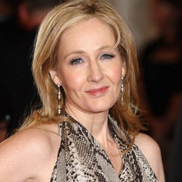

-

Joanne Rowling (born July 31, 1965), who goes by the pen name J.K. Rowling, is a British author and screenwriter best known for her seven-book Harry Potter children's book series. J.K. Rowling was living in Edinburgh, Scotland, and struggling to get by as a single mom before her first book, Harry Potter and the Sorcerer's Stone, was published. The children's fantasy novel became an international hit and Rowling became an international literary sensation in 1999 when the first three installments of Harry Potter took over the top three slots of The New York Times best-seller list after achieving similar success in her native United Kingdom. The series has sold more than 450 million copies and was adapted into a blockbuster film franchise. Rowling published the novel The Casual Vacancy in 2012, followed by the crime novel Cuckoo Calling under the pen name Robert Galbraith in 2013. In 2016, she released a play, Harry Potter and the Cursed Child, and a movie, Fantastic Beasts and Where to Find Them.!
-
According to The Sunday Times 2017 Rich List, J.K. Rowling’s net worth is £650 million (about $850 million) — making her wealthier than even Queen Elizabeth II. Forbes put her wealth at $650 million in 2017, in large part due to the 450 million copies of Harry Potter sold to-date and the subsequent movie franchise that has grossed $7.7 billion. (Her worth would've been more in Forbes if it were not for the $150 million she has donated to various charities.) In the first half of 2017, Rowling took home an estimated $95 million thanks to her new play, Harry Potter and the Cursed Child, and movie, Fantastic Beasts and Where to Find Them.
-
In 2014, Rowling published a short story about grown-up Harry Potter and a Hogwarts school reunion on her website Pottermore. Since the site launched, she’s added more stories and information about all things Harry Potter.

After a number of rejections, J.K. Rowling finally sold her first book for the equivalent of about $4,000. (The word "Philosopher" in the book’s original title was changed to "Sorcerer" for its publication in America.) The book, which first hit shelves in June 1997, was the start of a seven-book series chronicling the life of the young wizard Harry Potter and his motley band of cohorts at the Hogwarts School of Witchcraft and Wizardry.
Rowling's first book aimed at adults was published in September 2012. The novel, a dark comedy about a local election in the small English town of Pagford, received mixed reviews. A book review in The New York Times called the novel "disappointing" and "dull." A review in The Telegraph, however, gave the book three out of five stars, stating that “Jane Austen herself would admire the way [Rowling] shows the news of Barry’s death spreading like a virus round Pagford."
In April 2013, Rowling broke into a new genre, crime fiction, with a novel she published under the pen name Robert Galbraith. In its first few months of release, the novel had modest sales and received positive reviews. Sales for the work skyrocketed in July when its author's identity was discovered. According to Bloomberg News, Rowling said that "I had hoped to keep this secret a little longer, because being Robert Galbraith has been such a liberating experience. It has been wonderful to publish without hype or expectation, and pure pleasure to get feedback under a different name."